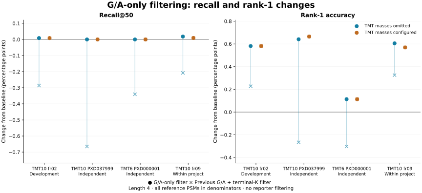
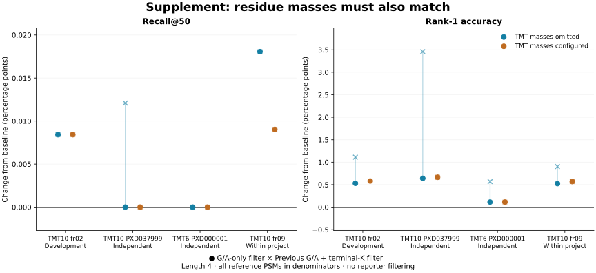
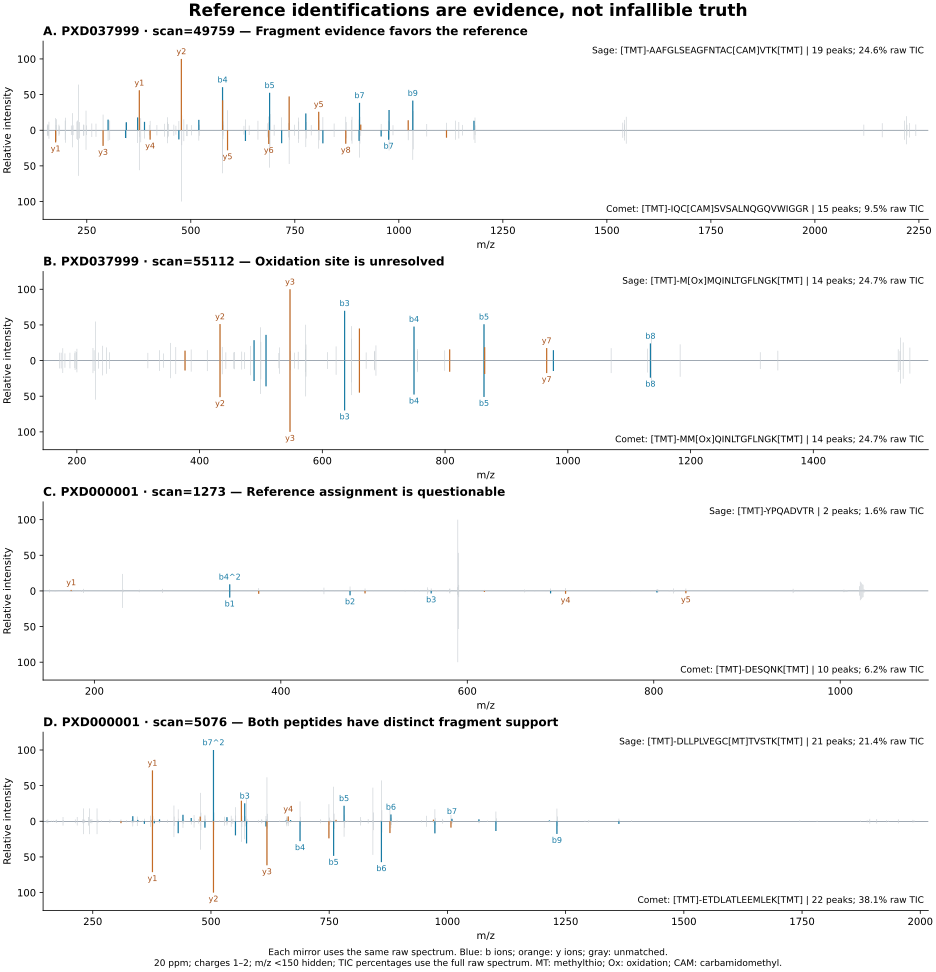

11 November 2026 · feat/tmt-pseudo-tag-filter · G/A-only implementation
81bf267 · revised mixed-label safeguard 27e70f2
In the completed benchmark, automatic G/A-only filtering improves rank-1 accuracy in every TMT file, both with and without configured TMT masses. No previously correct recall@50 or rank-1 case is lost under either scoring rule. Recall itself changes very little. The benefit survives a supplementary analysis restricted to independently corroborated reference peptides.
The reference set is broadly supported, but not infallible. The audit found a questionable reference assignment, unresolved modification localization, and spectra supporting two different peptides. None was relabeled or removed from the primary benchmark.
The final safeguard was retimed. All 108 tag outputs match the previously scored G/A-only outputs byte for byte; accuracy scoring was reused only after that check. The runtime table uses the final executions. Verification record.
The two independent validation projects are PXD037999 and PXD000001. Their results are:
| Configuration | PSMs | Recall@50 | Rank-1 accuracy |
|---|---|---|---|
| TMT omitted | 10912 | 95.115% → 95.115% (+0) | 82.203% → 82.716% (+56) |
| TMT configured | 10912 | 94.630% → 94.630% (+0) | 81.562% → 82.093% (+58) |
Across all four TMT files, including development fr02 and within-project validation fr09:
| Configuration | PSMs | Recall@50 | Rank-1 accuracy |
|---|---|---|---|
| TMT omitted | 33854 | 97.900% → 97.909% (+3) | 87.216% → 87.783% (+192) |
| TMT configured | 33854 | 97.643% → 97.649% (+2) | 86.971% → 87.532% (+190) |
| File | PSMs | Recall@50 (%) | Δ correct | Rank-1 (%) | Δ correct |
|---|---|---|---|---|---|
| PXD004541_fr02 | 11870 | 99.410 → 99.419 | +1 | 90.025 → 90.607 | +69 |
| PXD037999 | 8270 | 94.800 → 94.800 | +0 | 81.765 → 82.406 | +53 |
| PXD000001 | 2642 | 96.101 → 96.101 | +0 | 83.573 → 83.687 | +3 |
| PXD004541_fr09 | 11072 | 99.025 → 99.043 | +2 | 89.144 → 89.749 | +67 |
| File | PSMs | Recall@50 (%) | Δ correct | Rank-1 (%) | Δ correct |
|---|---|---|---|---|---|
| PXD004541_fr02 | 11870 | 99.267 → 99.275 | +1 | 89.966 → 90.548 | +69 |
| PXD037999 | 8270 | 94.196 → 94.196 | +0 | 80.967 → 81.632 | +55 |
| PXD000001 | 2642 | 95.988 → 95.988 | +0 | 83.422 → 83.535 | +3 |
| PXD004541_fr09 | 11072 | 98.871 → 98.880 | +1 | 89.090 → 89.659 | +63 |
Each comparison holds the residue alphabet fixed. The primary paper rule accepts a matching sequence or reverse (I/L equivalent) with at least one correct flank at the same placement, within 0.05 Da. All reference PSMs are in the denominator; a spectrum with no reported tag counts as a miss. The supplementary rule additionally requires each residue mass, including modifications, to match within 0.02 Da. It still requires only one matching flank, so it is residue-mass consistency, not a complete test of precursor closure or peptide identity.


Iteration 1: removed only the bare-K rejection rule. The G/A mass windows and positive TMT detector stayed unchanged. Iteration 2: retained that tag filter and made the conflicting-label veto more sensitive after reproducing a failure in a file containing two labels. The positive TMT criterion is unchanged. These are separate commits and separate benchmark runs.
L = 229.162932; W = 18.010565
TMT_N = spectra with n ≈ L or c ≈ L − W
TMT_K = spectra with c ≈ K + L or n ≈ K + L + W
conflict_N, conflict_K = analogous counts at L = 304.207146
positive_min = max(20, ceil(eligible / 100))
conflict_min = max(5, ceil(eligible / 100))
activate only if eligible ≥ 100 and TMT_N, TMT_K ≥ positive_min
abstain if both conflict counts ≥ conflict_min, or tolerance is in Da
for each scored b/y tag, before deduplication and the top-N cap:
reject bare first G/A with n ≈ L − mass(G/A)
reject bare last G/A with c ≈ L − W − mass(G/A)
terminal K alone never triggers rejection
retain surviving scores; refill vacated output slots
Windows remain ±0.020 Da for N and ±0.006 Da for C. G/A residues with inline or fixed modifications are protected. The separate reporter-endpoint filter is off throughout this experiment. Automatic mode changes filtering, not the configured modification alphabet.
A K-ending tag can still be removed for an independent G/A pseudo-residue at its other end. K with label mass in its terminal gap is otherwise retained.
Rejected expansions: widening N to ±0.050 Da or C to ±0.020 Da, or adding N-window offsets of ±1/±2 isotope masses, gave zero additional rank-1 gains in a capped-output replay of all nine configurations. That replay does not estimate recall or cap-refill gains. Raw precursor checks showed no isotope misassignment in the three top-ranked isotope-window cases. Wider windows also overlap genuine TA, R and GL prefix masses in label-free spectra. These findings do not support adding the proposed rules.
The original detector was challenged on 22 additional projects: seven TMT, six TMTpro, four label-free, two iTRAQ, two dimethyl and one SILAC. Four of four high-resolution TMT runs activated. All 15 non-TMT6/10 controls stayed off. Three TMT ion-trap/MS3 runs abstained, including when stress-tested at 20 ppm. Correct abstention on unsupported data is not successful label identification.
In artificial files assembled from independently acquired spectra, the original gate missed 10% TMTpro in a TMT-rich file: its conflict counts were 29 and 16, so one site fell below the old minimum of 20. In the frozen replay, the new conflict threshold caught that mixture and a second source pair fixed before replay (31 and 11 supporting spectra, minimum 8), while retaining pure TMT detection. At 95:5 in that second pair, the counts of 10 and 7 failed the requirement that both sites reach 8. No further threshold tuning was performed.
These proportions describe numbers of spectra in synthetic files, not molar labeling ratios,
mixed peptides in a spectrum, or an experimentally established detection limit. TMT mixed with
label-free spectra activated even at 10% TMT: the gate detects TMT presence, not complete labeling
or file purity. A 304-Da veto is compatible with TMTpro and iTRAQ8 and must not be read as
a specific label identification. The revised diagnostic says
conflicting_304Da_label_evidence.
Input hashes, expectations, source protocols, probe counts and compiled-gate verification are retained in the challenge records and candidate evaluation.
The final compiled binary reproduced all 43 frozen challenge and mixture decisions, with identical probe counts. Compiled-binary verification.

Sage and Comet agree on 6,773 of 6,774 shared accepted sequences in PXD037999 and 9,543 of 9,548 in fr09 (I/L equivalent). Deposited Mascot agrees on 2,132 of 2,142 shared accepted Erwinia sequences. Agreement between search engines is useful corroboration but can share database and modeling biases.
Restricting the two independent projects to 8,979 references with an accepted independent search supporting the same modified peptide retains the benefit: +29 label-blind and +30 label-aware correct rank-1 tags, zero paired losses and unchanged recall. The small full-cohort recall gains lie outside the independently corroborated subset. This selected subset is supplementary; it does not replace the original denominators. See exact subset counts and failure strata.
Median elapsed seconds from three runs per arm, eight threads, warm input cache, same lightly loaded dax host. Times include input/output and automatic probing. Forced G/A filtering is shown separately from automatic mode, which adds a bounded probing pass. The negative control's output is unchanged.
| File | Configuration | Baseline s | Forced on s | Automatic s | Δ s | Δ % |
|---|---|---|---|---|---|---|
| PXD004541_fr02 | label_blind | 2.976 | 2.971 | 3.207 | +0.231 | +7.8% |
| PXD004541_fr02 | label_aware | 2.988 | 2.986 | 3.22 | +0.232 | +7.8% |
| PXD037999 | label_blind | 1.355 | 1.352 | 1.49 | +0.135 | +10.0% |
| PXD037999 | label_aware | 1.407 | 1.406 | 1.548 | +0.141 | +10.0% |
| PXD000001 | label_blind | 0.348 | 0.351 | 0.543 | +0.195 | +56.0% |
| PXD000001 | label_aware | 0.361 | 0.356 | 0.551 | +0.190 | +52.6% |
| PXD004541_fr09 | label_blind | 1.965 | 1.954 | 2.128 | +0.163 | +8.3% |
| PXD004541_fr09 | label_aware | 1.963 | 1.96 | 2.144 | +0.181 | +9.2% |
| PXD003531 | control | 3.149 | 3.151 | 3.535 | +0.386 | +12.3% |
Each complete iteration comprises 9 file/chemistry cells × 4 arms × 3 repetitions = 108 executions. The four arms are v1.13.1 baseline, new default/off, forced G/A on, and automatic G/A. Final runtime measurements and accuracy reuse require the output-equivalence check described above. The completed G/A-only benchmark passed repeat-output and default/baseline equality checks. An independent audit also rehashed all 216 output files across both iterations and found no changed cells. Raw outputs remain in the original user-owned research directory on Ceph.
Settings: tag length 4, extension 0, one ordinary two-residue gap, cap 50, E ≤ 20 before a gap penalty of 100, maximum 400 peaks, 10 per window, and 20-ppm fragment tolerance. Reference PSMs are frozen Sage rank-1 targets at spectrum q ≤ 0.01, excluding any entrapment/decoy protein mapping. PXD004541 fr02 is development data; fr09 is within-project validation. PXD037999 and PXD000001 are independent projects; PXD003531 is a label-free control. No reference label was changed.
FASTag -in run.mzML -out tags.tsv -tmt_pseudo_filter auto # For known TMT, configure its masses as usual: # -fixed_modifications 'Carbamidomethyl (C)' 'TMT6plex (K)' 'TMT6plex (N-term)' # -variable_modifications 'Oxidation (M)' # Default remains off. Reporter filtering is separate and was not used.
Artifacts: metrics · paired changes · hashes/settings · timing commands · per-spectrum outcomes · iteration 1 · iteration protocol.